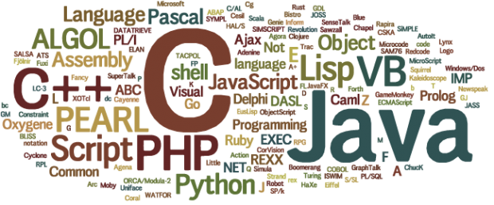
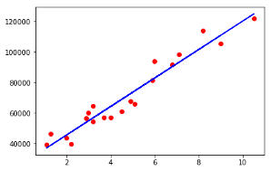
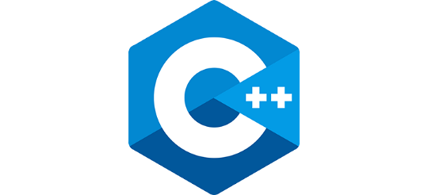

﹉
我想學程式，但到底該從哪個語言入門？ ﹍

身處在這個「全民學程式」時代，幾年後當程式設計變成連國中生都必備的能力時，不會寫程式的人在未來就要變成少數民族。當越來越多人開始對學程式語言有興趣，大家常常問的第一個問題就是，到底該從哪個程式語言開始？
網路上常常有文章針對熱門程式語言做分析，例如
C++、Python、Java、Javascript、Swift、Objective-C、Ruby。然後在看這些語言介紹時，我們都會看到一堆奇怪的外星名詞。物件導向？多重繼承？靜態成員函式？身為一個初學者只想大喊：
「我就是看不懂專業術語才要學啊，可不可以先給我看一些人話！」
完全不知道該選什麼語言的下場是，讓很多人打退堂鼓，或矇著眼就選了一個看起來順眼，但學起來很痛苦的語言。因此，為了不要讓大家留下無法抹滅的痛苦陰影，就讓我們先用門外漢詞彙與麻瓜語來了解哪一種語言最適合我們學吧！
只是想學程式 vs 想要做出一個＿＿
一般來說，想學程式的初學者大致可以分為兩種，第一種是純粹想要學習寫程式，沒有特別目標的，也就是那些會說：「感覺寫程式很好玩，來寫寫看程式好了。」、「程式之後一定很重要，學一下鍛鍊腦袋也不吃虧。」的人。
第二種則是有很明確想要實作出的目標，例如：想要寫出一個自己的個人網站、想要寫一個好玩的 App 等等。
在這篇文章中，我們會先針對第一種沒有特別目的的人，詳細介紹兩個最多人學習，使用領域也非常廣泛的語言：Python 與 C++。
Python

講到入門該先學哪個語言，現在最多人推薦的，大概就屬 Python 了。的確，Python 在 2014
年就已經成為美國頂尖大學資工系最受歡迎的入門語言，也在多項票選中，被視為最適合初學者學的語言。綜觀來說，Python
擁有三個對新手很友善的特點，讓它成為新時代的入門語言。
Python 的好棒棒之處：
好理解
好偷懶
好作弊
閱讀更多
〡
好理解：
寫 Python 就像在跟電腦講英文一樣。
因為 Python 的程式語法設計的非常簡潔，讓讀 Python 所寫的程式碼就像在讀英文一樣的直觀。
舉例來說，如果我今天要寫一個叫電腦印出「Python 好棒棒」的程式，我只需要對電腦說：
print(“Python 好棒棒”)
但同樣的事情，如果我要用 C++ 印出「C++ 好棒棒」，我卻需要跟電腦說：
#include
int main()
{
cout << “C++ 好棒棒” << endl; }
如果是第一次看到這串程式碼，想必有些人已經黑人問號掉滿地了。
好偷懶：
Python 的語法設計讓電腦自動幫了你很多忙。
Python 希望讓你需要打的字越少越好，一方面加速你寫程式的速度，一方面也符合它訴求程式碼簡潔美麗的原則，所以 Python
會把能讓電腦幫你完成的，盡量留給電腦。以程式語言裡一個叫宣告變數的簡單動作為例：
在 C++ 中，如果我要規定 x 這個變數等於 3 時，我需要先說 x 是個整數 int，接著說他等於 3 ，最後再加個分號。在程式碼裡，它會是
int x = 3;
但在 Python 中，你可以直接說 x 等於 3 就好，他是整數的這件事，Python 自己叫電腦幫你判斷了。在程式碼裡，它會是
x = 3
可別小看這些小小的差異。雖然對於程式老鳥來說，很多像這樣的小細節就像反射動作一樣能夠自動反應，但對剛入門的初學者而言，少一個 ; ，忘記宣告一個 int
，少加一個分號導致程式無法執行乃是家常便飯，無形中也更增加了初學者學習的痛苦與浪費的時間。
好作弊：
Python 有很多好用的工具，讓你可以把需要複雜的程式碼才能完成的功能像作弊般用幾行簡單程式碼就能輕鬆解決。
Python
的使用社群提供了非常豐富且強大的模組（在這裡我們可以把這個優勢想像成前人留下的智慧）。簡單來說，模組就是別人已經寫好的程式碼，這些程式碼中預留了一些填參數的空間，讓你可以客製化自己想要結果。
實際舉例，假設程式麻瓜 A 先生今天想要用 Python
來做線性迴歸的數據分析，他不用自己純手工釀造把統計學裡那套最小平方法等等等的東西一筆一畫刻進程式碼裡，他只要使用前人的智慧，例如：sklearn
模組，把裡面寫好的線性迴歸分析功能叫出來，然後把自己的資料丟進去，咻咻咻的就在 regressor 這個東西裡面做完全部的線性回歸的事了。在程式碼裡大概長這樣*
#擷取前人的智慧
from sklearn.linear_model import LinearRegression
#把前人的智慧放進程式碼
regressor = LinearRegression()
#把自己的資料丟進去，看著魔法發生，讓模組處理好所有事情
regressor.fit(X_data, y_data)
什麼，你說你還想看資料視覺化？要視覺化我們可以再使用前人的智慧，例如：matplotlib 模組。接下來把所有資料丟進去，咻咻咻，視覺化的圖就噴出來了。
#擷取前人的智慧 again
import matplotlib.pyplot as plt
#設定自己的資料用紅點點標示好
plt.scatter(X_data, y_data, color = ‘red’)
#設定 regressor 裡面處理好的回歸分析＋預測用一條藍色的線標示好
plt.plot(X_data, regressor.predict(X_data), color = ‘blue’)
#把圖秀出來
plt.show()

這些強大的工具包括資料視覺化的 Matplotlib、資料分析的 Pandas & Numpy、機器學習的 scikit-learn、深度學習的
TensorFlow、爬蟲的
BeautifulSoup、網頁用的 Django
等等，網路上也有一些 Python 教學是針對這些模組直接應用的，如果很想趕快應用的話可以先從這些教學開始，但也別忘了程式本身的基礎還是很重要的。
C++

講到程式語言，大部分台灣人第一個想到的非 C 與 C++莫屬。不僅因為台灣大部分大學都以 C / C++ 做為資工科系的入門，C / C++也是目前應用最廣的程式語言之一。
C 與 C++都是發展許久的語言，C 始於 1970s，C++則是基於 C 的基礎，加上了一些新特性（包括物件導向、泛型等等對程式麻瓜一聽就嚇跑的外星名詞）的增強版。而大致上，用 C
寫出來的程式可以用 C++
跑（有一些小例外，但就不在此討論），但用 C++ 寫出來的東西就沒辦法用 C 執行。因此，為了簡化學習的選擇，我們這邊就先只針對 C++ 做介紹。
C++ 的好棒棒之處：
好扎實
好輕鬆
好迅速
好扎實:
學好 C++可以讓你有最豐富扎實的電腦知識與程式基礎。
C++是非常基礎的語言，雖然在介紹 Python 時說過，C++對新手來說可能會覺得很囉唆，怪腔怪調的。但透過學習 C++，絕對可以鍛鍊完整且扎實的電腦知識。例如在
C++中，在學基礎時就會學到記憶體位址，實際執行時也會有比較深刻地了解編譯式語言（這個外星名詞下面會解釋）的特點等等。
另外一個讓 C++
很扎實的原因是，他允許你用各種不同的方式與程式碼去達成同樣一件事情。這樣的好處是，你可以學習用很多不同的角度去解決事情。但這樣的壞處是，你必須要學習用很多不同的角度去解決事情。因為如果要理解別人的程式碼，你通常需要知道大部分的方法。
好輕鬆:
學好 C++後你學其它語言絕對會覺得輕鬆許多，但…學 C++絕對會先讓你不輕鬆很久。
這點對大部份想入門的新手來說都不是件好事，只有你學完之後，才會深感
C++對你的磨練（摧殘）。在上一段提到的兩點，鍛鍊完整知識與學習不同方法的優點背後，其實也都說明了
C++並不是一個可以輕鬆上手的語言。
鍛鍊完整知識意味著你必須要從最基礎開始了解，為什麼一定要宣告變數、為什麼要指派記憶體位址等等。這些外星知識可能會讓程式麻瓜一開始只想印出一行字就學的很頭痛。
學習不同方法意味著你除了要會很多方法，也要小心被各種方法搞得頭昏腦脹。因為這不只讓 C++
要學的東西變複雜，也讓它在應用上容易與其他方法搞混。相反的，在 Python
中，它的設計哲學是：「用一種方法，最好是只有一種方法來做一件事」，就是為了讓程式更好被新手了解。
但度過剛開始學習的痛苦，之後要學習其他語言會覺得相對輕鬆很多。除了擁有扎實的基礎知識外，目前大部分的語言都是基於 C /
C++發展而來，學了 C++ 再去學其他語言也不會有太大的隔閡。
好迅速:
C++在處理很龐大的資料量或執行很複雜的程式時，執行速度跟 Python 比快很多。
在了解這一點前，我們要先理解 C++跟 Python 在本質上有一個很大的差異。C++是編譯式語言，而
Python
是直譯式語言。在了解這兩個外星名詞前，我們要先知道，電腦是不懂英文的。所以要告訴電腦它要做什麼，我們得先把程式碼翻譯成電腦唯一懂的語言：0
與 1。
直譯式語言指的是程式在執行時，由一個軟體（直譯器）一行一行把程式碼一邊翻譯一邊執行。而編譯式語言，則是在程式碼執行前，就用編譯器把整份程式碼翻譯好了。
這兩個概念就像假如我們去聽一場冰島語的演講，直譯語言像是即時口譯，在演講時才能透過口譯員（直譯器）一句一句把冰島語翻成中文。而編譯語言像是由翻譯人員（編譯器）事先翻好的逐字稿。去聽演講時，我們可以直接對照逐字稿即可。
當然，閱讀事先翻譯好的逐字稿一定比邊聽邊翻譯的即時口譯快。因此我們也能知道，為何編譯式語言
C++執行速度會快於直譯式語言 Python
了。
Python 跟 C++ 的比較
有人說，學習 C++像是開手排車，你必須要了解離合器、換檔。學習 Python
像是開自排車，需要你自已操控的東西變少了。學習用
Python 的模組就像開自動駕駛的車子，輸入目的地，咻就到了。
「C++省電腦的精力，Python 省人類的精力。」